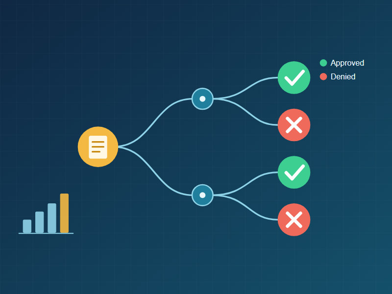
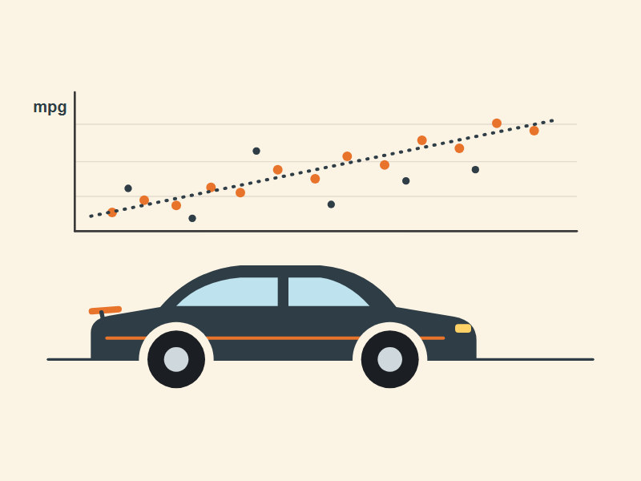
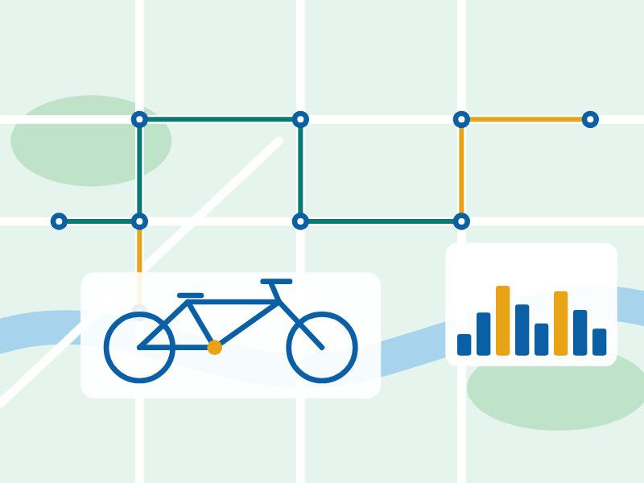

Cost-conscious and analytical Industrial Engineer with a proven track record of optimizing quality, productivity, and operational processes in fast-paced manufacturing environments.

Credit Risk Analysis
This project applies supervised machine learning to a large dataset of loans to predict loan approvals and denials. I tested six models: four resampling methods (RandomOverSampler, SMOTE, ClusterCentroids, SMOTEENN) and two ensemble classifiers (BalancedRandomForest and EasyEnsemble), and compared their balanced accuracy, precision and recall. EasyEnsemble performed best, with a balanced accuracy of 91.4% and a recall of 94%, so I recommend it, because missing a risky loan costs more than flagging a safe one.
View project on GitHub
Cryptocurrency
This project groups cryptocurrencies into categories to give new investors a clear way to understand the market. I cleaned and standardized the data, reduced its dimensions with PCA, used an elbow curve to choose the number of groups, clustered the coins with K-means, and plotted the results with hvPlot and Plotly. The elbow curve showed that four clusters fit best, which gives investors a four-class classification of the coins.
View project on GitHub

MechaCar Statistical Analysis
This project analyzes MechaCar prototype data to find what affects fuel efficiency (mpg) and whether the suspension coils meet the design limit. I built a linear regression for mpg, summarized the coil data for each manufacturing lot, ran t-tests, and designed a study comparing MechaCar with competitors. Ground clearance and vehicle length had a significant effect on mpg, and the model explains about 71.5% of the variation; the coils met the 100 PSI variance limit overall (62.29 PSI), but Lot 3 did not.
View project on GitHub

NYC Citibike Tableau
This project uses NYC Citibike trip data to help a client decide whether to start a bike-sharing business in Des Moines. I built Tableau dashboards on ride duration, bike movement and weekday use. Most rides last under 20 minutes, stay close to where they began, and peak at commuting hours, but because most riders are subscribers and commuters, I concluded the case for Des Moines is still inconclusive.
View project on GitHub